勾股定理可能是最著名的几何定理，也是最著名的数学定理之一，因此我必须用一节的篇幅对它进行专门介绍。在直角三角形中，与直角相对的边叫作斜边，另外两边叫作直角边。下面这个直角三角形的直角边是
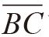
和，斜边是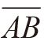
，它的边长分别是a、b和c。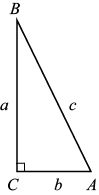
勾股定理：如果直角三角形的直角边长为a和b，斜边长为c，就有：
a2 + b2 = c2
据说勾股定理的证明方法超过300种，本书将介绍其中最简单的几种。大家在阅读时，可以略过某些证明方法。我希望大家在看完之后，会觉得其中至少有一种证明方法非常有意思，并且夸赞道：“这个证明方法真是太棒了！”
证明方法1：在下图中，我们将4个直角三角形拼成一个大正方形。
问题：这个大正方形的面积是多少？
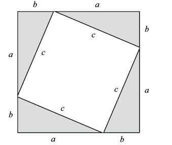
答案1：这个大正方形的边长是 a + b，因此它的面积是 (a + b)2 = a2 + 2ab + b2。
答案2：换个角度思考，大正方形包含4个三角形，每个三角形的面积为 ab/2，中间还有一个倾斜的正方形，面积为c2。（中间的那个图形为什么是正方形呢？我们知道它的4条边都相等，如果将这个图形旋转90°，根据对称原理，图形保持不变，因此这个图形的4个内角都相等。同时，由于四边形的内角和为360°，所以每个角都是90°。）因此，大正方形的面积是4(ab)/2 + c2 = 2ab + c2。
综合上述两种答案，就会得到：
a2 + 2ab + b2 = 2ab + c2
两边同时减去2ab：
a2 + b2 = c2
证明完毕。
证明方法2：我们把上图中的三角形按照下图所示方式重新排列。在上图中没有被三角形覆盖的面积是c2，而在第二幅图中没有被三角形覆盖的面积是a2 + b2。因此，c2 = a2 + b2。证明完毕。
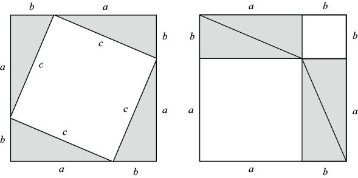
证明方法3：如下图所示，我们再次调整三角形的位置，让它们拼成一个面积为c2、结构更紧凑的正方形。（这之所以是一个正方形，是因为它的4个角都是角A和角B结合形成的，而且这两个角的和是90°。）前文已经计算过，这4个三角形的面积是4(ab/2) = 2ab，位于中央位置的那个倾斜正方形的面积是 (a – b)2 = a2– 2ab + b2，两者相加的和是2ab + (a2– 2ab + b2 ) = a2 + b2。证明完毕。
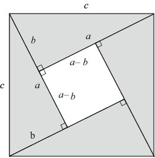
证明方法4：下面给出的是一种相似性证明法，即在证明过程中会利用相似三角形。如下图所示，从直角C向斜边画垂直线段。我们观察发现，三角形ADC包含一个直角和角A，因此它的第三个内角必然和角B相等。同理，三角形CDB包含一个直角和角B，因此它的第三个内角必然和角A相等。也就是说，这3个三角形彼此相似：
△ ACB △ADC△CDB
△ADC△CDB
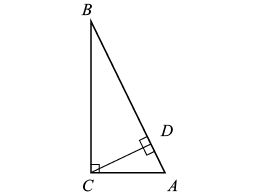
注意，表示这些三角形时字母次序不能出错。我们知道，∠ACB =∠ADC = ∠CDB = 90°，它们都是直角。同理，∠A = ∠BAC = ∠CAD = ∠BCD，∠B = ∠CBA = ∠DCA = ∠DBC。比较三角形ACB和ADC的边长，就会得到：
AC / AB = AD / AC ⇒ AC2 = AD × AB
比较三角形ACB和CDB的边长，就会得到：
CB / BA = DB / BC ⇒ BC2 = DB × AB
两个等式相加，就会得到：
AC2 + BC2 = AB × (AD + DB)
由于AD + DB = AB = c，因此：
b2 + a2 = c2
下面介绍的是一种纯粹的几何证明方法，不需要使用代数知识，但要求我们有图形想象能力。
证明方法5：如下图所示，画出面积分别为a2和b2的两个正方形，并将它们并排放置，因此它们的总面积是a2 + b2。我们对这个图形进行分割处理，把它变成两个直角三角形（直角边长分别是a和b，斜边长为c）和一个看上去比较奇怪的图形。注意，这个奇怪图形底部的那个角肯定是90°。我们想象在大正方形的左上角和小正方形的右上角分别装上铰链。
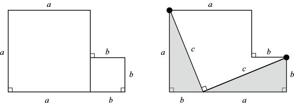
接下来，想象左下角的那个三角形逆时针旋转90°，停留在大正方形的上方。然后，另一个三角形顺时针旋转90°，使它的直角正好与两个正方形构成的直角重合（如下图所示）。这样一来，我们就会得到一个倾斜的正方形，它的面积为c2。因此，a2 + b2 = c2。证明完毕。
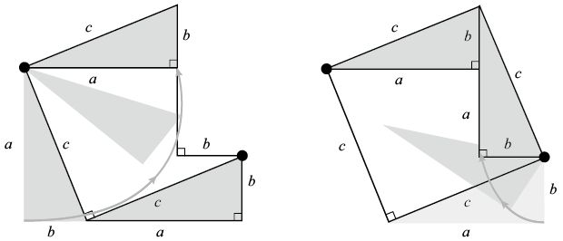
现在，我们可以解答本章开头小测试中的问题4了。利用勾股定理，即可算出系在相距360英尺的两个球门柱根部的长度为361英尺的绳子可以抬高多少。
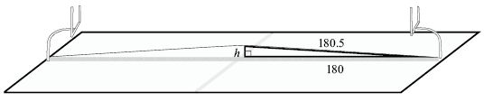
球场中央到球门柱的距离是180英尺。如上图所示，绳子抬至最高处之后，所构成的直角三角形的一条直角边长为180英尺，斜边长为180.5英尺。根据勾股定理，经过简单的代数运算，就可以得出：
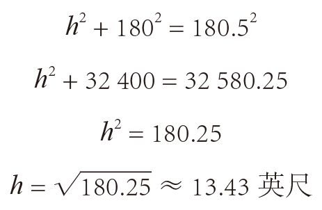
因此，大多数卡车都可以轻松地从绳子下方通过！